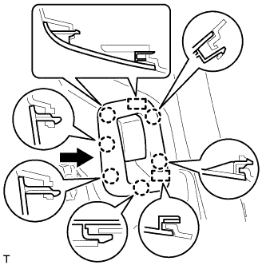

ЗАДНЕЕ СИДЕНЬЕ № 1 В СБОРЕ (складываемое вдвое раздельное сиденье 60/40 с левой стороны) > УСТАНОВКА |
| 1. УСТАНОВИТЕ ЗАЩЕЛКУ ЗАМКА ПОДУШКИ ЗАДНЕГО СИДЕНЬЯ |
Установите защелку и закрепите ее 2 болтами.
| 2. УСТАНОВИТЕ ЗАЩЕЛКУ ЗАМКА СПИНКИ ЛЕВОГО ЗАДНЕГО СИДЕНЬЯ № 2 В СБОРЕ |
Введите в зацепление захват и закрепите защелку 2 болтами.
Затягивайте болты в порядке, указанном на рисунке.
| 3. УСТАНОВИТЕ ЛЕВУЮ БОКОВУЮ ОБЛИЦОВОЧНУЮ ПАНЕЛЬ ПОЛКИ БАГАЖНОГО ОТДЕЛЕНИЯ В СБОРЕ |
Для моделей без заднего сиденья № 2:
Пропустите опору рычага фиксации спинки заднего сиденья через боковую облицовочную панель полки багажного отделения.
Установите боковую облицовочную панель полки багажного отделения, закрепив ее 5 фиксаторами и 8 захватами.
Вверните 4 болта и 2 винта.
Введите в зацепление 6 захватов и 2 направляющих, чтобы установить опору рычага фиксации спинки заднего сиденья на боковую облицовочную панель полки багажного отделения.
Установите напольное крепление ремня безопасности заднего сиденья № 1 и закрепите его болтом.
Для моделей с задним сиденьем № 2:
Установите боковую облицовочную панель полки багажного отделения, закрепив ее 4 фиксаторами и 8 захватами.
Вверните 2 болта и 2 винта.
Установите напольное крепление ремня безопасности заднего сиденья № 2 и закрепите его болтом.
Установите напольное крепление ремня безопасности заднего сиденья № 1 и закрепите его болтом.
| 4. УСТАНОВИТЕ ПЕРЕДНЮЮ БОКОВУЮ ОБЛИЦОВОЧНУЮ НАКЛАДКУ БАГАЖНОГО ОТДЕЛЕНИЯ (для моделей с задней крышкой) |
Введите в зацепление 2 захвата, чтобы закрепить переднюю боковую облицовочную накладку полки багажного отделения
| 5. УСТАНОВИТЕ КОЛПАЧОК КРЕПЛЕНИЯ ЗАДНЕЙ КРЫШКИ № 1 (для моделей без задней крышки) |
Введите в зацепление 2 захвата, чтобы закрепить колпачок крепления задней крышки № 1.
| 6. УСТАНОВИТЕ ЗАЩЕЛКУ ОБЛИЦОВКИ БАГАЖНОГО ОТДЕЛЕНИЯ № 1 |
Установите защелку облицовочной панели багажного отделения № 1, повернув ее по часовой стрелке.
| 7. УСТАНОВИТЕ НАКЛАДКУ КРЕПЛЕНИЯ ПОЯСНОГО РЕМНЯ БЕЗОПАСНОСТИ ЗАДНЕГО СИДЕНЬЯ № 1 |
Введите в зацепление 3 захвата, чтобы установить накладку крепления поясного ремня безопасности заднего сиденья № 1.
| 8. УСТАНОВИТЕ ЗАДНИЙ НАПОЛЬНЫЙ КОВРИК |
Введите в зацепление 4 захвата, чтобы установить задний напольный коврик.

| *A | для моделей без направляющей полки багажного отделения | *B | для моделей с направляющей полки багажного отделения |
| *C | Для сидений с противоположным расположением | - | - |
| 9. УСТАНОВИТЕ ЛЕВУЮ БОКОВУЮ НАПРАВЛЯЮЩУЮ ПОЛА (для моделей с направляющей полки багажного отделения) |
Установите боковую направляющую пола, закрепив ее 3 болтами.
| 10. УСТАНОВИТЕ ПРАВУЮ БОКОВУЮ НАПРАВЛЯЮЩУЮ ПОЛА (для моделей с направляющей полки багажного отделения) |
| 11. УСТАНОВИТЕ ЗАДНЮЮ ОПОРНУЮ ПЛАСТИНУ КОВРИКА ЗАДНЕГО ПОЛА |
Введите в зацепление 5 фиксаторов и 4 захвата, чтобы установить заднюю опорную пластину коврика заднего пола.
| 12. УСТАНОВИТЕ ПАНЕЛЬ ПОЛКИ БАГАЖНОГО ОТДЕЛЕНИЯ № 1 В СБОРЕ |
Установите панель полки багажного отделения № 1, закрепив ее фиксатором.
| 13. УСТАНОВИТЕ ПЕРЕДНЮЮ ОБЛИЦОВОЧНУЮ НАКЛАДКУ БАГАЖНОГО ОТДЕЛЕНИЯ |
 |
Установите защелку ремня для удержания багажа и переднюю облицовочную накладку багажного отделения и закрепите их болтом.
| *1 | Защелка ремня для удержания багажа |
Введите в зацепление 4 захвата для установки колпачка.
| 14. УСТАНОВИТЕ ЗАДНЮЮ КРЫШКУ В СБОРЕ (для моделей с задней крышкой) |
Установите заднюю крышку.
| 15. УСТАНОВИТЕ УПЛОТНИТЕЛЬ ПРОЕМА ЗАДНЕЙ ЛЕВОЙ ДВЕРИ |
 |
Совместите нанесенную краской отметку на уплотнителе обшивки проема задней двери с отмеченным положением на автомобиле и установите уплотнитель обшивки проема задней двери, как показано на рисунке.
| *1 | Метка, нанесенная краской |
| *2 | Положение метки |
| 16. УСТАНОВИТЕ ОПОРНУЮ НАКЛАДКУ ЛЕВОЙ ЗАДНЕЙ ДВЕРИ |
Введите в зацепление 3 фиксатора, 6 захватов и 2 направляющие, чтобы установить опорную накладку задней двери.
| 17. УСТАНОВИТЕ ЛЕВОЕ ЗАДНЕЕ СИДЕНЬЕ № 2 В СБОРЕ (для моделей с задним сиденьем № 2) |
Для моделей с противоположно расположенными сиденьями:
Установите заднее сиденье № 2 в сборе (Нажмите здесь).
| 18. УСТАНОВИТЕ ОПОРУ РЫЧАГА ФИКСАЦИИ СПИНКИ ЛЕВОГО ЗАДНЕГО СИДЕНЬЯ |
Закрепите зажим троса, чтобы подсоединить трос.
|  |
Переместите щиток в направлении, указанном на рисунке стрелкой, чтобы ввести в зацепление 2 направляющие.
Введите в зацепление 6 захвата, чтобы установить опору рычага.
| 19. УСТАНОВИТЕ ПЕТЛЮ СПИНКИ ЛЕВОГО ЗАДНЕГО СИДЕНЬЯ В СБОРЕ |
Установите петлю и закрепите ее болтом.
| 20. УСТАНОВИТЕ СПИНКУ ЛЕВОГО ЗАДНЕГО СИДЕНЬЯ В СБОРЕ |
 |
Сложите спинку сиденья, установите жгут установки положения спинки сиденья на петлю, а затем временно вверните болт в петлю.
| *1 | Жгут установки положения |
Верните спинку сиденья в вертикальное положение и временно закрепите ее 2 болтами.
Затягивайте болты в порядке, указанном на рисунке.
| 21. УСТАНОВИТЕ ПАНЕЛЬ ПОКРЫТИЯ СПИНКИ ЛЕВОГО ЗАДНЕГО СИДЕНЬЯ В СБОРЕ |
Введите в зацепление 4 захвата и 5 фиксаторов, чтобы закрепить панель покрытия.
| 22. УСТАНОВИТЕ ОБИВКУ СПИНКИ ЗАДНЕГО СИДЕНЬЯ |
Введите в зацепление 4 захвата, чтобы закрепить обивку.
Верните спинку сиденья в вертикальное положение и зафиксируйте ее.
| 23. УСТАНОВИТЕ ПОДГОЛОВНИК ЗАДНЕГО СИДЕНЬЯ В СБОРЕ |
Установите подголовник.
| 24. УСТАНОВИТЕ ПОДУШКУ ЛЕВОГО ЗАДНЕГО СИДЕНЬЯ В СБОРЕ |
Установите подушку сиденья и предварительно закрепите ее 2 болтами.
Затягивайте болты в порядке, указанном на рисунке.
Зафиксируйте подушку сиденья.
| 25. УСТАНОВИТЕ НАКЛАДКУ ПЕТЛИ ПОДУШКИ ЛЕВОГО ЗАДНЕГО СИДЕНЬЯ |
Введите в зацепление 3 захвата, чтобы установить крышку.
| 26. УСТАНОВИТЕ НАКЛАДКУ ПРАВОЙ ПЕТЛИ ПОДУШКИ ЗАДНЕГО СИДЕНЬЯ |
Введите в зацепление 3 захвата, чтобы установить крышку.